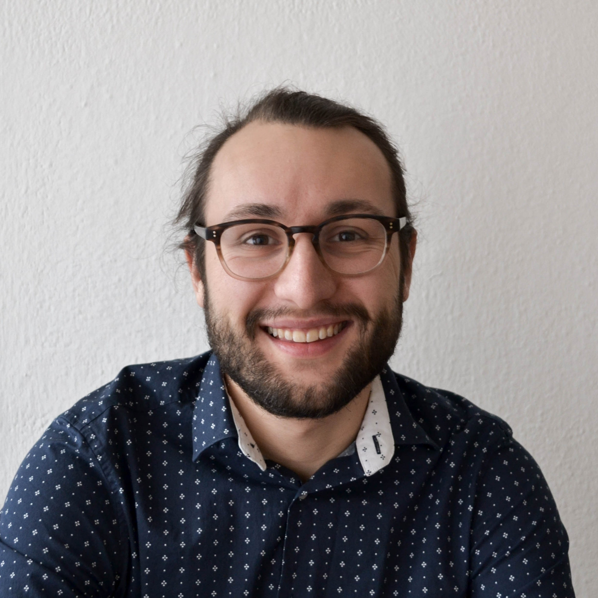

LAURENS OOSTWEGEL
Welcome! I'm a researcher at the Slovenian National Building Institute in the Building Physics department. My interests lay in the Built Environment, big and smaller scale.
CURRENT OCCUPATION
2020 - current
Researcher at ZAG
Laurens Oostwegel is a researcher at the Slovenian National Building Institute (ZAG) in the Building Physics department. He graduated from Geomatics for the Built Environment (MSc) at the TU Delft and from Human Geography (MSc) at the University of Utrecht in 2020.
EDUCATION
2016 - 2020
Geomatics for the Built Environment (MSc)
TU Delft (NL) - Geomatics is concerned with the acquisition, analysis, management
and visualisation of geographic data with the aim of gaining knowledge and a
better understanding of built and natural environments.
2017 - 2019
Urban Geography (MSc)
Utrecht University (NL) - The world is urbanizing. Cities are geographies of opposites.
This master teaches you to observe the social world: nuanced, complex as it is. It
gives a thorough understanding of the current urban problems.
2013 - 2016
Architecture, Urbanism and Building Sciences (BSc)
TU Delft (NL) - A broad bachelor, learning the technical, design and social aspects
of architecture and urbanism. Electives in: Urban Geography.
PREVIOUS EXPERIENCES
2019 - 2020
Thesis internship at CGI (NL)
Thesis internship where I researched the possibility of indoor positioning
in the case of Emergency Response using the Microsoft Hololens. I used three
spatial matching techniques to register the Hololens data to a floor plan.
2019
Thesis internship at IPOP (SL)
Thesis internship at the Institute for Spatial Policies in Ljubljana where
I researched the effect of green space in the city on the social networks of
residents.
2017
Internship at Deltares (NL)
Deltares (NL) - Internship concerning point cloud analysis and database
management. Learned valuable skills in working in a team with multiple
programmers.
OTHER ACTIVITIES
2018 - 2019
GEOS Board
Events and External Affairs - Board member of the study association of Geomatics
for the Built Environment.
2018
Study abroad at the TU Munich
A study abroad at the faculty of Geodesy. In one semester I studied
various topics concerning cartography, machine learning and software
development.
2016 - 2017
Festival Aangeschoten Wild
Cultural Booker - A music and cultural festival in Delft, where I composed a variety
of cultural acts, ranging from theatre, to expositions and graffiti artists.
2016 - 2017
Abracadabaret Board
Treasurer - Board member of the theatre group Abracadabaret.Nunc sem ligula, vulputate vitae ligula vel, aliquam malesuada neque.